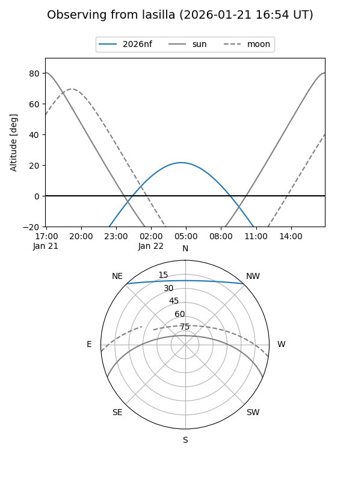
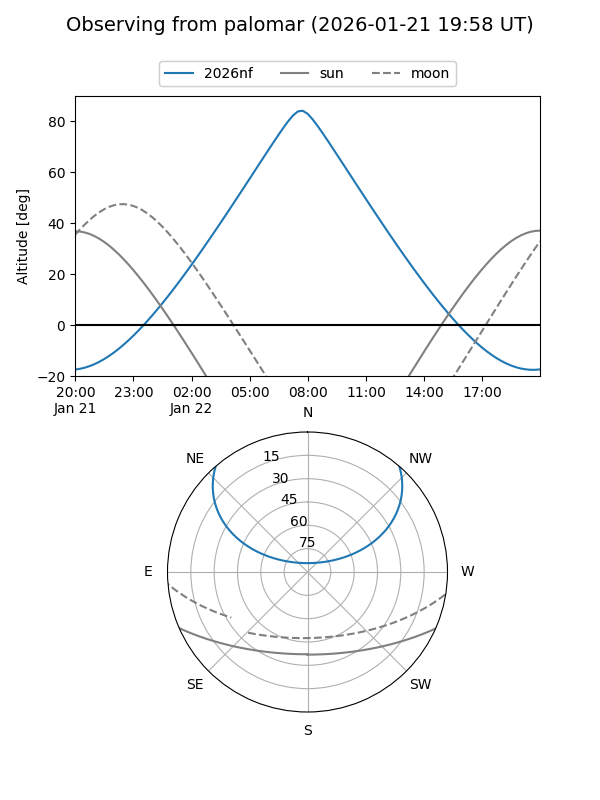
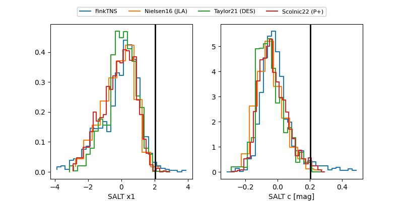

2026nf
Target 2026nf at 2026-01-16 07:15
Aliases and brokers:
FINK: link
Lasair: link
ALeRCE: link
TNS: link
YSE: link
alt names
ZTF26aaboegn (ztf,fink_ztf)
2026nf (tns,yse)
PS26dj (panstarrs)
Coordinates:
equatorial (ra, dec) = 119.1870,+39.13238
equatorial (HMS+DMS) = 07:56:44.88,+39:07:56.58
galactic (l, b) = (181.0932,+28.80667)
Flags:
Photometry:
last ztfr=20.30
1 ztfr detections
Lightcurve

Visibility


Additional plots
